2.3 Finding the Best Model
2.3.1 Model Diagnostics
Consider the three following models.
| Formula | Equation |
|---|---|
| Rating ~ Balance + Income | \(Y=\beta_0 + \beta_1 X_1 + \beta_2 X_2\) |
| Rating ~ Balance | \(Y=a X_1 + b\) (\(\beta_0=b, \beta_1=a, \beta_2=0\)) |
| Rating ~ Income | \(Y=a X_2 + b\) (\(\beta_0=b, \beta_1=0, \beta_2=a\)) |
## (Intercept) X1 X2
## 172.5586670 0.1828011 2.1976461## (Intercept) X1
## 226.4711446 0.2661459## (Intercept) X2
## 253.851416 3.025286Which of the three models is the best? Of course, by using the word “best”, we need to answer the question “best?… but with respect to what kind of measure?”
So far we were fitting w.r.t. SSR, as the multiple regression model generalises the two simple ones, the former must yield a not-worse SSR. This is because in the case of \(Y=\beta_0 + \beta_1 X_1 + \beta_2 X_2\), setting \(\beta_1\) to 0 (just one of uncountably many possible \(\beta_1\)s, if it happens to be the best one, good for us) gives \(Y=a X_2 + b\) whereas by setting \(\beta_2\) to 0 we obtain \(Y=a X_1 + b\).
## [1] 358260.6## [1] 2132108## [1] 1823473We get that \(f_{12} \succeq f_{2} \succeq f_{1}\) but these error values are meaningless.
Interpretability in ML has always been an important issue, think the EU General Data Protection Regulation (GDPR), amongst others.
The quality of fit can be assessed by performing some descriptive statistical analysis of the residuals, \(\hat{y}_i-y_i\), for \(i=1,\dots,n\).
I know how to summarise data on the residuals! Of course I should compute their arithmetic mean and I’m done with that shtask! Interestingly, the mean of residuals (this can be shown analytically) in the least squared fit is always equal to \(0\): \[ \frac{1}{n} \sum_{i=1}^n (\hat{y}_i-y_i)=0. \] Therefore, we need a different metric.
(*) A proof of this fact is left as an exercise to the curious; assume \(p=1\) just as in the previous chapter and note that \(\hat{y}_i=a x_i+b\).
## [1] 4.444473e-16## [1] TRUEWe noted that sum of squared residuals (SSR) is not interpretable, but the mean squared residuals (MSR) – also called mean squared error (MSE) regression loss – is a little better. Recall that mean is defined as the sum divided by number of samples.
\[ \mathrm{MSE}(f) = \frac{1}{n} \sum_{i=1}^n (f(\mathbf{x}_{i,\cdot})-y_i)^2. \]
## [1] 1155.679## [1] 6877.768## [1] 5882.171This gives an information of how much do we err per sample, so at least this measure does not depend on \(n\) anymore. However, if the original \(Y\)s are, say, in metres \([\mathrm{m}]\), MSE is expressed in metres squared \([\mathrm{m}^2]\).
To account for that, we may consider the root mean squared error (RMSE): \[ \mathrm{RMSE}(f) = \sqrt{\frac{1}{n} \sum_{i=1}^n (f(\mathbf{x}_{i,\cdot})-y_i)^2}. \] This is just like with the sample variance vs. standard deviation – recall the latter is defined as the square root of the former.
## [1] 33.99528## [1] 82.93231## [1] 76.69531The interpretation of the RMSE is rather quirky; it is some-sort-of-averaged deviance from the true rating (which is on the scale 0–1000, hence we see that the first model is not that bad). Recall that the square function is sensitive to large observations, hence, it penalises notable deviations more heavily.
As still we have a problem with finding something easily interpretable (your non-technical boss or client may ask you: but what do these numbers mean??), we suggest here that the mean absolute error (MAE; also called mean absolute deviations, MAD) might be a better idea than the above: \[ \mathrm{MAE}(f) = \frac{1}{n} \sum_{i=1}^n |f(\mathbf{x}_{i,\cdot})-y_i|. \]
## [1] 22.86342## [1] 61.48892## [1] 64.1506With the above we may say “On average, the predicted rating differs from the observed one by”. That is good enough.
(*) You may ask why don’t we fit models so as to minimise the MAE and we minimise the RMSE instead (note that minimising RMSE is the same as minimising the SSR, one is a strictly monotone transformation of the other and do not affect the solution). Well, it is possible. It turns out that, however, minimising MAE is more computationally expensive and the solution may be numerically unstable. So it’s rarely an analyst’s first choice (assuming they are well-educated enough to know about the MAD regression task). However, it may be worth trying it out sometimes.
Sometimes we might prefer MAD regression to the classic one if our data is heavily contaminated by outliers. But in such cases it is worth checking if proper data cleansing does the trick.
If we are not happy with single numerical aggregated of the residuals or their absolute values, we can (and should) always compute a whole bunch of descriptive statistics:
## Min. 1st Qu. Median Mean 3rd Qu. Max.
## -108.100 -1.940 7.812 0.000 20.249 50.623## Min. 1st Qu. Median Mean 3rd Qu. Max.
## -226.75 -48.30 -10.08 0.00 42.58 268.74## Min. 1st Qu. Median Mean 3rd Qu. Max.
## -195.156 -57.341 -1.284 0.000 64.013 175.344The outputs generated by summary() include:
Min.– sample minimum1st Qu.– 1st quartile == 25th percentile == quantile of order 0.25Median– median == 50th percentile == quantile of order 0.53rd Qu.– 3rd quartile = 75th percentile == quantile of order 0.75Max.– sample maximum
For example, 1st quartile is the observation \(q\) such that
25% values are \(\le q\) and 75% values are \(\ge q\),
see ?quantile in R.
Graphically, it is nice to summarise the empirical distribution of the residuals on a box and whisker plot:
- IQR == Interquartile range == Q3\(-\)Q1 (box width)
- The box contains 50% of the “most typical” observations
- Box and whiskers altogether have width \(\le\) 4 IQR
- Outliers == observations potentially worth inspecting (is it a bug or a feature?)
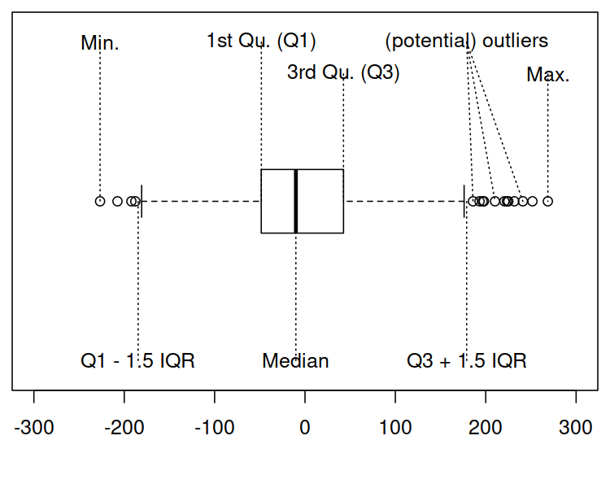
A picture is worth a thousand words:
boxplot(las=1, horizontal=TRUE, xlab="residuals",
list(f12=f12$residuals, f1=f1$residuals, f2=f2$residuals))
abline(v=0, lty=3)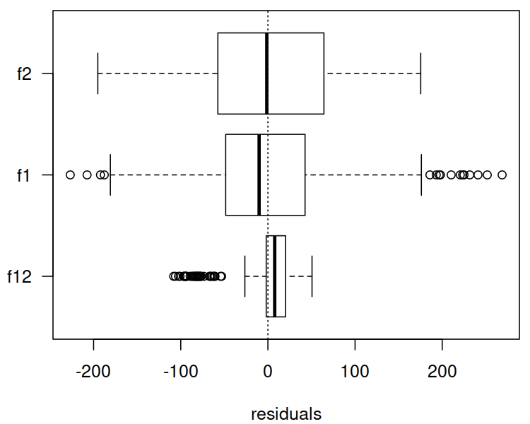
Violin plot – a blend of a box plot and a (kernel) density estimator (histogram-like):
library("vioplot")
vioplot(las=1, horizontal=TRUE, xlab="residuals",
list(f12=f12$residuals, f1=f1$residuals, f2=f2$residuals))
abline(v=0, lty=3)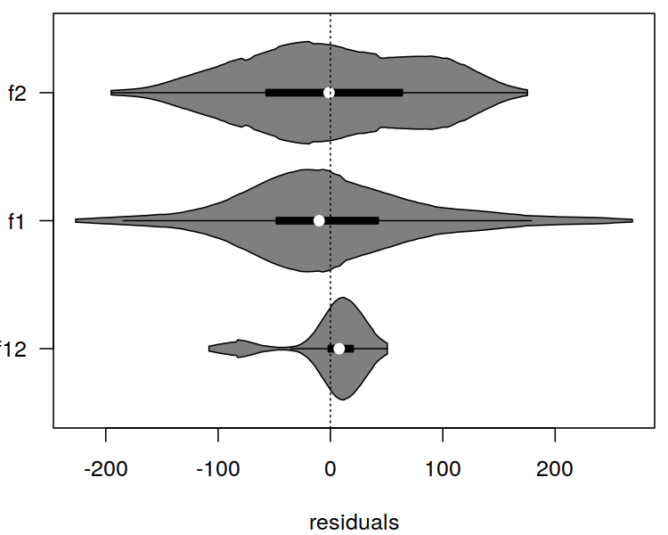
By the way, this is Rating (\(Y\)) as function of Balance (\(X_1\), top subfigure) and Income (\(X_2\), bottom subfigure).
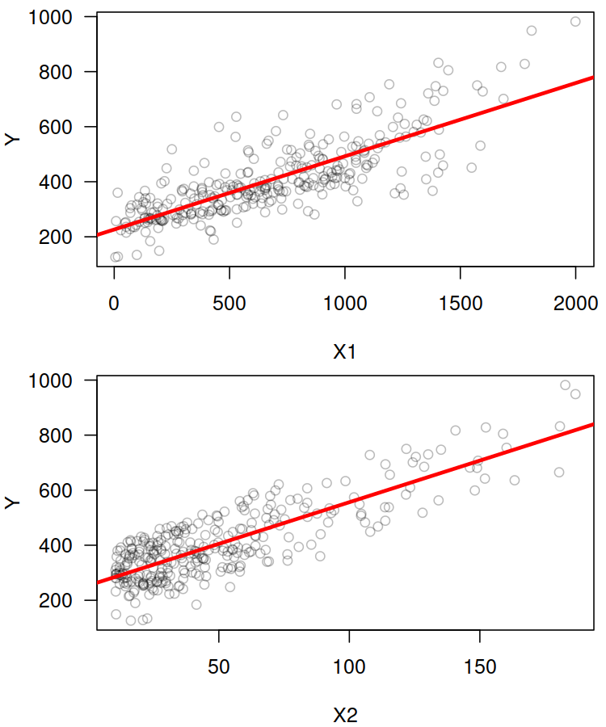
Descriptive statistics for absolute values of residuals:
## Min. 1st Qu. Median Mean 3rd Qu. Max.
## 0.06457 6.46397 14.07055 22.86342 26.41772 108.09995## Min. 1st Qu. Median Mean 3rd Qu. Max.
## 0.5056 19.6640 45.0716 61.4889 80.1239 268.7377## Min. 1st Qu. Median Mean 3rd Qu. Max.
## 0.6545 29.8540 59.6756 64.1506 95.7384 195.1557This picture is worth $1000:
boxplot(las=1, horizontal=TRUE, xlab="abs(residuals)",
list(f12=abs(f12$residuals), f1=abs(f1$residuals),
f2=abs(f2$residuals)))
abline(v=0, lty=3)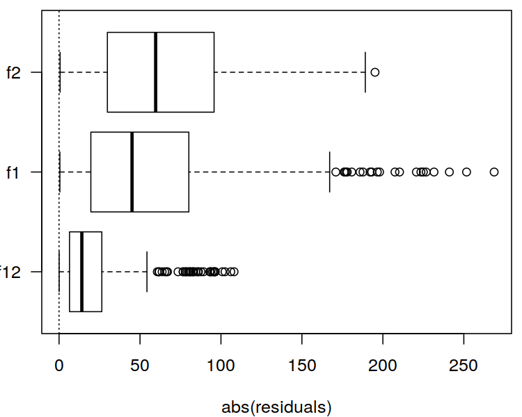
If we didn’t know the range of the dependent variable (in our case we do know that the credit rating is on the scale 0–1000), the RMSE or MAE would be hard to interpret.
It turns out that there is a popular normalised (unit-less) measure that is somehow easy to interpret with no domain-specific knowledge of the modelled problem. Namely, the (unadjusted) \(R^2\) score (the coefficient of determination) is given by:
\[ R^2(f) = 1 - \frac{\sum_{i=1}^{n} \left(y_i-f(\mathbf{x}_{i,\cdot})\right)^2}{\sum_{i=1}^{n} \left(y_i-\bar{y}\right)^2}, \] where \(\bar{y}\) is the arithmetic mean \(\frac{1}{n}\sum_{i=1}^n y_i\).
## [1] 0.9390901## [1] 0.6375085## [1] 0.6899812The coefficient of determination gives the proportion of variance of the dependent variable explained by independent variables in the model; \(R^2(f)\simeq 1\) indicates a perfect fit
Unfortunately, \(R^2\) tends to automatically increase as the number of independent variables increase (recall that the more variables in the model, the better the SSR must be). To correct for this phenomenon, we sometimes consider the adjusted \(R^2\):
\[ \bar{R}^2(f) = 1 - (1-{R}^2(f))\frac{n-1}{n-p-1} \]
## [1] 0.9386933## [1] 0.6363316## [1] 0.6889747In other words, the adjusted \(R^2\) penalises for more complex models.
(*) Side note – results of some statistical tests (e.g., significance of coefficients) are reported by calling
summary(f12)etc. — refer to a more advanced source to obtain more information. These, however, require the verification of some assumptions regarding the input data and the residuals.
##
## Call:
## lm(formula = Y ~ X1 + X2)
##
## Residuals:
## Min 1Q Median 3Q Max
## -108.100 -1.940 7.812 20.249 50.623
##
## Coefficients:
## Estimate Std. Error t value Pr(>|t|)
## (Intercept) 1.726e+02 3.950e+00 43.69 <2e-16 ***
## X1 1.828e-01 5.159e-03 35.43 <2e-16 ***
## X2 2.198e+00 5.637e-02 38.99 <2e-16 ***
## ---
## Signif. codes: 0 '***' 0.001 '**' 0.01 '*' 0.05 '.' 0.1 ' ' 1
##
## Residual standard error: 34.16 on 307 degrees of freedom
## Multiple R-squared: 0.9391, Adjusted R-squared: 0.9387
## F-statistic: 2367 on 2 and 307 DF, p-value: < 2.2e-162.3.2 Variable Selection
Okay, up to now we were considering the problem of modelling
the Rating variable as a function of Balance and/or Income.
However, it the Credit data set there are other variables
possibly worth inspecting.
Consider all quantitative (numeric-continuous) variables in the Credit data set.
C <- Credit[Credit$Balance>0,
c("Rating", "Limit", "Income", "Age",
"Education", "Balance")]
head(C)## Rating Limit Income Age Education Balance
## 1 283 3606 14.891 34 11 333
## 2 483 6645 106.025 82 15 903
## 3 514 7075 104.593 71 11 580
## 4 681 9504 148.924 36 11 964
## 5 357 4897 55.882 68 16 331
## 6 569 8047 80.180 77 10 1151Obviously there are many possible combinations of the variables upon which regression models can be constructed (precisely, for \(p\) variables there are \(2^p\) such models). How do we choose the best set of inputs?
We should already be suspicious at this point: wait… best requires some sort of criterion, right?
First, however, let’s draw a pair plot – a matrix of scatter plots for every pair of variables – so as to get an impression of how individual variables interact with each other.
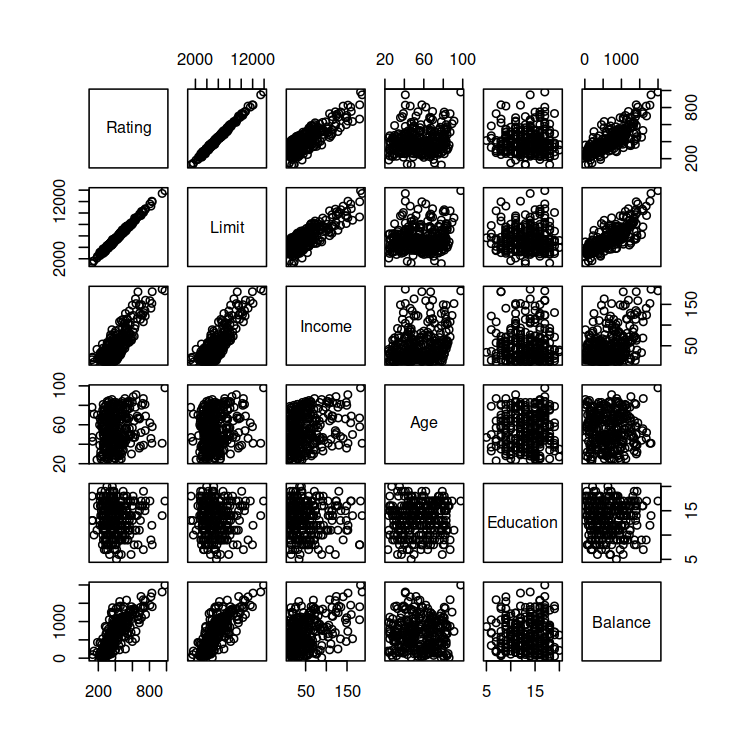
Seems like Rating depends on Limit almost linearly…
Pearson’s \(r\) – linear correlation coefficient:
\[ r(\boldsymbol{x},\boldsymbol{y}) = \frac{ \sum_{i=1}^n (x_i-\bar{x}) (y_i-\bar{y}) }{ \sqrt{\sum_{i=1}^n (x_i-\bar{x})^2} \sqrt{\sum_{i=1}^n (y_i-\bar{y})^2} }. \]
It holds \(r\in[-1,1]\), where:
- \(r=1\) – positive linear dependence (\(y\) increases as \(x\) increases)
- \(r=-1\) – negative linear dependence (\(y\) decreases as \(x\) increases)
- \(r\simeq 0\) – uncorrelated or non-linearly dependent
Interpretation:
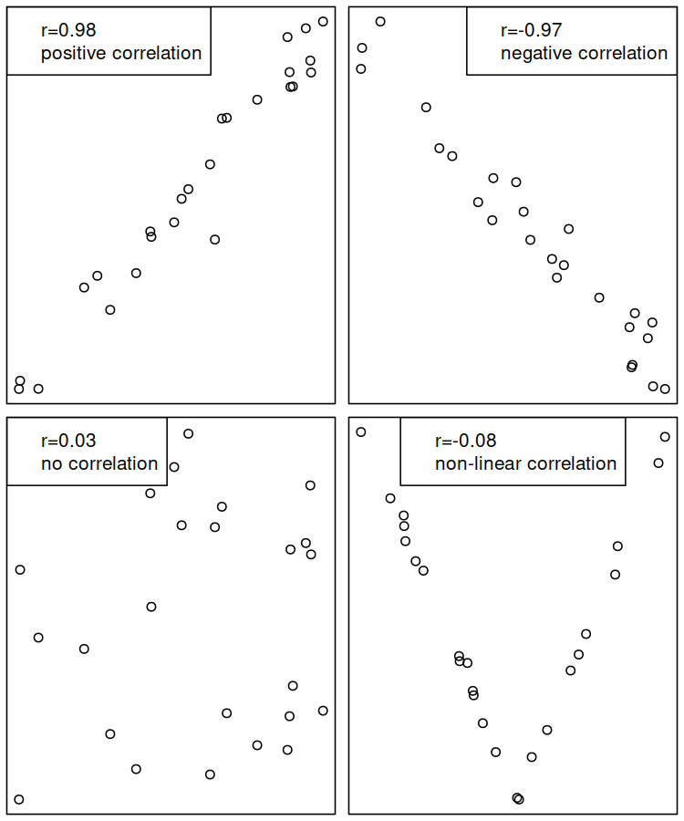
Compute Pearson’s \(r\) between all pairs of variables:
## Rating Limit Income Age Education Balance
## Rating 1.000 0.996 0.831 0.167 -0.040 0.798
## Limit 0.996 1.000 0.834 0.164 -0.032 0.796
## Income 0.831 0.834 1.000 0.227 -0.033 0.414
## Age 0.167 0.164 0.227 1.000 0.024 0.008
## Education -0.040 -0.032 -0.033 0.024 1.000 0.001
## Balance 0.798 0.796 0.414 0.008 0.001 1.000Rating and Limit are almost perfectly linearly correlated,
and both seem to describe the same thing.
For practical purposes, we’d rather model Rating as a function of the other variables.
For simple linear regression models, we’d choose either Income or Balance.
How about multiple regression?
The best model:
- has high predictive power,
- is simple.
These are often mutually exclusive.
Which variables should be included in the optimal model?
Again, the definition of the “best” object needs a fitness function.
For fitting a single model to data, we use the SSR.
We need a metric that takes the number of dependent variables into account.
(*) Unfortunately, the adjusted \(R^2\), despite its interpretability, is not really suitable for this task. It does not penalise complex models heavily enough to be really useful.
Here we’ll be using the Akaike Information Criterion (AIC).
For a model \(f\) with \(p'\) independent variables: \[ \mathrm{AIC}(f) = 2(p'+1)+n\log(\mathrm{SSR}(f))-n\log n \]
Our task is to find the combination of independent variables that minimises the AIC.
(*) Note that this is a bi-level optimisation problem – for every considered combination of variables (which we look for), we must solve another problem of finding the best model involving these variables – the one that minimises the SSR. \[ \min_{s_1,s_2,\dots,s_p\in\{0, 1\}} \left( \begin{array}{l} 2\left(\displaystyle\sum_{j=1}^p s_j +1\right)+\\ n\log\left( \displaystyle\min_{\beta_0,\beta_1,\dots,\beta_p\in\mathbb{R}} \sum_{i=1}^n \left( \beta_0 + s_1\beta_1 x_{i,1} + \dots + s_p\beta_p x_{i,p} -y_i \right)^2 \right) \end{array} \right) \] We dropped the \(n\log n\) term, because it is always constant and hence doesn’t affect the solution. If \(s_j=0\), then the \(s_j\beta_j x_{i,j}\) term is equal to \(0\), and hence is not considered in the model. This plays the role of including \(s_j=1\) or omitting \(s_j=0\) the \(j\)-th variable in the model building exercise.
For \(p\) variables, the number of their possible combinations is equal to \(2^p\) (grows exponentially with \(p\)). For large \(p\) (think big data), an extensive search is impractical (in our case we could get away with this though – left as an exercise to a slightly more advanced reader). Therefore, to find the variable combination minimising the AIC, we often rely on one of the two following greedy heuristics:
forward selection:
- start with an empty model
- find an independent variable whose addition to the current model would yield the highest decrease in the AIC and add it to the model
- go to step 2 until AIC decreases
backward elimination:
- start with the full model
- find an independent variable whose removal from the current model would decrease the AIC the most and eliminate it from the model
- go to step 2 until AIC decreases
(**) The above bi-level optimisation problem can be solved by implementing a genetic algorithm – see further chapter for more details.
(*) There are of course many other methods which also perform some form of variable selection, e.g., lasso regression. But these minimise a different objective.
Forward selection example:
C <- Credit[Credit$Balance>0,
c("Rating", "Income", "Age",
"Education", "Balance")]
step(lm(Rating~1, data=C), # empty model
scope=formula(lm(Rating~., data=C)), # full model
direction="forward")## Start: AIC=3055.75
## Rating ~ 1
##
## Df Sum of Sq RSS AIC
## + Income 1 4058342 1823473 2694.7
## + Balance 1 3749707 2132108 2743.2
## + Age 1 164567 5717248 3048.9
## <none> 5881815 3055.8
## + Education 1 9631 5872184 3057.2
##
## Step: AIC=2694.7
## Rating ~ Income
##
## Df Sum of Sq RSS AIC
## + Balance 1 1465212 358261 2192.3
## <none> 1823473 2694.7
## + Age 1 2836 1820637 2696.2
## + Education 1 1063 1822410 2696.5
##
## Step: AIC=2192.26
## Rating ~ Income + Balance
##
## Df Sum of Sq RSS AIC
## + Age 1 4119.1 354141 2190.7
## + Education 1 2692.1 355568 2191.9
## <none> 358261 2192.3
##
## Step: AIC=2190.67
## Rating ~ Income + Balance + Age
##
## Df Sum of Sq RSS AIC
## + Education 1 2925.7 351216 2190.1
## <none> 354141 2190.7
##
## Step: AIC=2190.1
## Rating ~ Income + Balance + Age + Education##
## Call:
## lm(formula = Rating ~ Income + Balance + Age + Education, data = C)
##
## Coefficients:
## (Intercept) Income Balance Age
## 173.8300 2.1668 0.1839 0.2234
## Education
## -0.9601The full model has been selected.
Backward elimination example:
step(lm(Rating~., data=C), # full model
scope=formula(lm(Rating~1, data=C)), # empty model
direction="backward")## Start: AIC=2190.1
## Rating ~ Income + Age + Education + Balance
##
## Df Sum of Sq RSS AIC
## <none> 351216 2190.1
## - Education 1 2926 354141 2190.7
## - Age 1 4353 355568 2191.9
## - Balance 1 1468466 1819682 2698.1
## - Income 1 1617191 1968406 2722.4##
## Call:
## lm(formula = Rating ~ Income + Age + Education + Balance, data = C)
##
## Coefficients:
## (Intercept) Income Age Education
## 173.8300 2.1668 0.2234 -0.9601
## Balance
## 0.1839The full model is considered the best.
Forward selection example – full dataset:
C <- Credit[, # do not restrict to Credit$Balance>0
c("Rating", "Income", "Age",
"Education", "Balance")]
step(lm(Rating~1, data=C), # empty model
scope=formula(lm(Rating~., data=C)), # full model
direction="forward")## Start: AIC=4034.31
## Rating ~ 1
##
## Df Sum of Sq RSS AIC
## + Balance 1 7124258 2427627 3488.4
## + Income 1 5982140 3569744 3642.6
## + Age 1 101661 9450224 4032.0
## <none> 9551885 4034.3
## + Education 1 8675 9543210 4036.0
##
## Step: AIC=3488.38
## Rating ~ Balance
##
## Df Sum of Sq RSS AIC
## + Income 1 1859749 567878 2909.3
## + Age 1 98562 2329065 3473.8
## <none> 2427627 3488.4
## + Education 1 5130 2422497 3489.5
##
## Step: AIC=2909.28
## Rating ~ Balance + Income
##
## Df Sum of Sq RSS AIC
## <none> 567878 2909.3
## + Age 1 2142.4 565735 2909.8
## + Education 1 1208.6 566669 2910.4##
## Call:
## lm(formula = Rating ~ Balance + Income, data = C)
##
## Coefficients:
## (Intercept) Balance Income
## 145.3506 0.2129 2.1863This procedure suggests including only the Balance and Income variables.
Backward elimination example – full dataset:
step(lm(Rating~., data=C), # full model
scope=formula(lm(Rating~1, data=C)), # empty model
direction="backward")## Start: AIC=2910.89
## Rating ~ Income + Age + Education + Balance
##
## Df Sum of Sq RSS AIC
## - Education 1 1238 565735 2909.8
## - Age 1 2172 566669 2910.4
## <none> 564497 2910.9
## - Income 1 1759273 2323770 3474.9
## - Balance 1 2992164 3556661 3645.1
##
## Step: AIC=2909.77
## Rating ~ Income + Age + Balance
##
## Df Sum of Sq RSS AIC
## - Age 1 2142 567878 2909.3
## <none> 565735 2909.8
## - Income 1 1763329 2329065 3473.8
## - Balance 1 2991523 3557259 3643.2
##
## Step: AIC=2909.28
## Rating ~ Income + Balance
##
## Df Sum of Sq RSS AIC
## <none> 567878 2909.3
## - Income 1 1859749 2427627 3488.4
## - Balance 1 3001866 3569744 3642.6##
## Call:
## lm(formula = Rating ~ Income + Balance, data = C)
##
## Coefficients:
## (Intercept) Income Balance
## 145.3506 2.1863 0.2129This procedure gives the same results as forward selection (however, for other data sets that is not necessarily the case).
2.3.3 Variable Transformation
So far we have been fitting linear models of the form: \[ Y = \beta_0 + \beta_1 X_1 + \dots + \beta_p X_p. \]
What about some non-linear models such as polynomials etc.? For example: \[ Y = \beta_0 + \beta_1 X_1 + \beta_2 X_1^2 + \beta_3 X_1^3 + \beta_4 X_2. \]
Solution: pre-process inputs by setting \(X_1' := X_1\), \(X_2' := X_1^2\), \(X_3' := X_1^3\), \(X_4' := X_2\) and fit a linear model:
\[ Y = \beta_0 + \beta_1 X_1' + \beta_2 X_2' + \beta_3 X_3' + \beta_4 X_4'. \]
This trick works for every model of the form \(Y=\sum_{i=1}^k \sum_{j=1}^p \varphi_{i,j}(X_j)\) for any \(k\) and any univariate functions \(\varphi_{i,j}\).
Also, with a little creativity (and maths), we might be able to transform a few other models to a linear one, e.g.,
\[ Y = b e^{aX} \qquad \to \qquad \log Y = \log b + aX \qquad\to\qquad Y'=aX+b' \]
This is an example of a model’s linearisation. However, not every model can be linearised. In particular, one that involves functions that are not invertible.
For example, here’s a series of simple (\(p=1\)) degree-\(d\) polynomial regression models of the form: \[ Y = \beta_0 + \beta_1 X + \beta_2 X^2 + \beta_3 X^3 + \dots + \beta_d X^d. \]
Such models can be fit with the lm() function based on the formula
of the form Y~poly(X, d) or Y~X+I(X^2)+I(X^3)+...
Above we have fit polynomials of degrees 1, 3 and 14. Note that a polynomial of degree 1 is just a line.
Let us depict the three models:
plot(X1, Y, las=1, col="#000000aa")
x <- seq(min(X1), max(X1), length.out=101)
lines(x, predict(f1_1, data.frame(X1=x)), col="red", lwd=3)
lines(x, predict(f1_3, data.frame(X1=x)), col="blue", lwd=3)
lines(x, predict(f1_14, data.frame(X1=x)), col="darkgreen", lwd=3)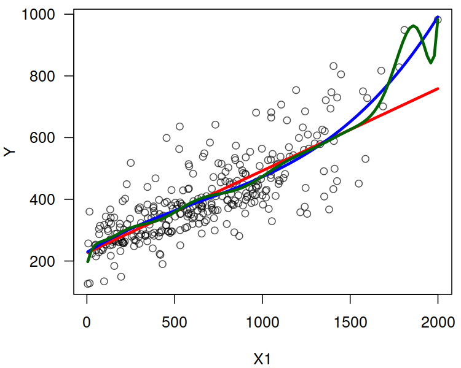
There’s clearly a problem with the degree-14 polynomial.
2.3.4 Predictive vs. Descriptive Power
The above high-degree polynomial model (f1_14) is a typical instance of a phenomenon called
an overfit.
Clearly (based on our expert knowledge), the Rating shouldn’t decrease as Balance increases.
In other words, f1_14 gives a better fit to data actually observed,
but fails to produce good results for the points that are yet to come.
We say that it generalises poorly to unseen data.
Assume our true model is of the form:
And we generate the following random sample from this model (with \(Y\) subject to error):
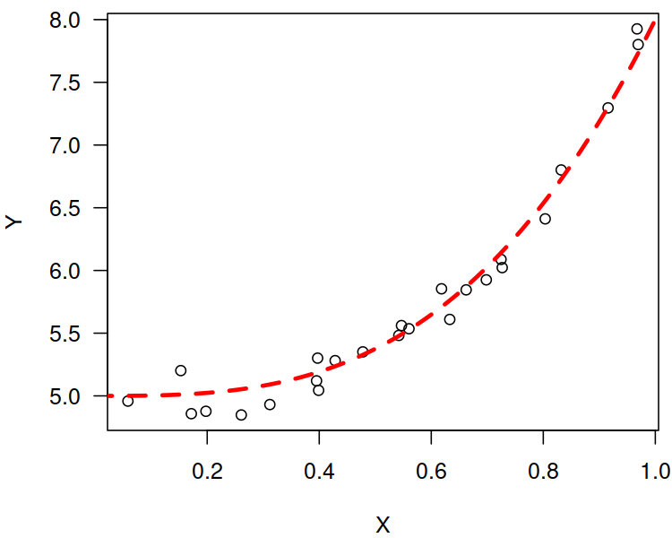
Let’s fit polynomials of different degrees:
plot(X, Y, las=1)
lines(x, true_model(x), col=2, lwd=3, lty=2)
dmax <- 15 # maximal polynomial degree
MSE_train <- numeric(dmax)
MSE_test <- numeric(dmax)
for (d in 1:dmax) { # for every polynomial degree
f <- lm(Y~poly(X, d)) # fit a d-degree polynomial
y <- predict(f, data.frame(X=x))
lines(x, y, col=d)
# MSE on given random X,Y:
MSE_train[d] <- mean(f$residuals^2)
# MSE on many more points:
MSE_test[d] <- mean((y-true_model(x))^2)
}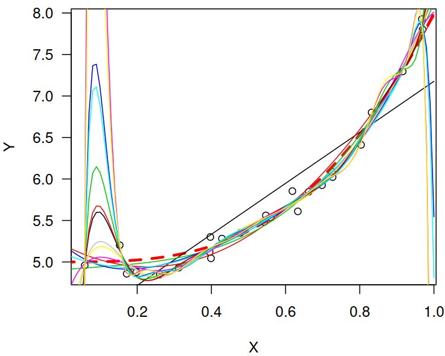
Compare the mean squared error (MSE) for the observed vs. future data points:
matplot(1:dmax, cbind(MSE_train, MSE_test), type='b',
las=1, ylim=c(1e-3, 1e3), log="y", pch=1:2,
xlab='Model complexity (degree of polynomial)',
ylab="MSE")
legend("topleft", legend=c("MSE train", "MSE test"),
lty=1:2, col=1:2, pch=1:2)Note the logarithmic scale on the \(y\) axis.
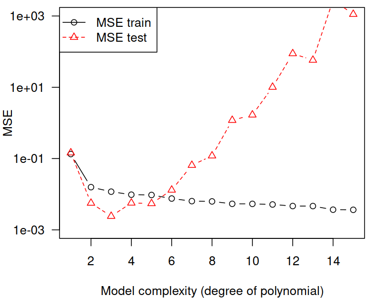
This is a very typical behaviour!
A model’s fit to observed data improves as the model’s complexity increases.
A model’s generalisation to unseen data initially improves, but then becomes worse.
In the above example, the sweet spot is at a polynomial of degree 3, which is exactly our true underlying model.
Hence, most often we should be interested in the accuracy of the predictions made in the case of unobserved data.
If we have a data set of a considerable size, we can divide it (randomly) into two parts:
- training sample (say, 60% or 80%) – used to fit a model
- test sample (the remaining 40% or 20%) – used to assess its quality (e.g., using MSE)
More on this issue in the chapter on Classification.
(*) We shall see that sometimes a train-test-validate split will be necessary, e.g., 60-20-20%.